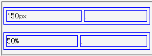

固定レイアウト表（table-layout:fixed;）の列の幅を%単位の値で指定したとき、列の幅は表の幅に対する%値ではなく表の幅からボーダーの幅やセル間の幅を差し引いた量に対する%値になる。
<style type="text/css">
table {
table-layout: fixed;
width: 300px;
border: 1px solid blue;
border-spacing: 5px;
}
td {
border: 1px solid blue;
}
</style>
<table>
<tr>
<td style="width:150px;">150px</td>
<td>.</td>
</tr>
</table>
<table>
<tr>
<td style="width:50%;">50%</td>
<td>.</td>
</tr>
</table>
| 150px | . |
| 50% | . |
widthプロパティをpx単位で指定した列の幅と、%単位で指定した列の幅は等しいはずです。
Netscape7.1標準モード